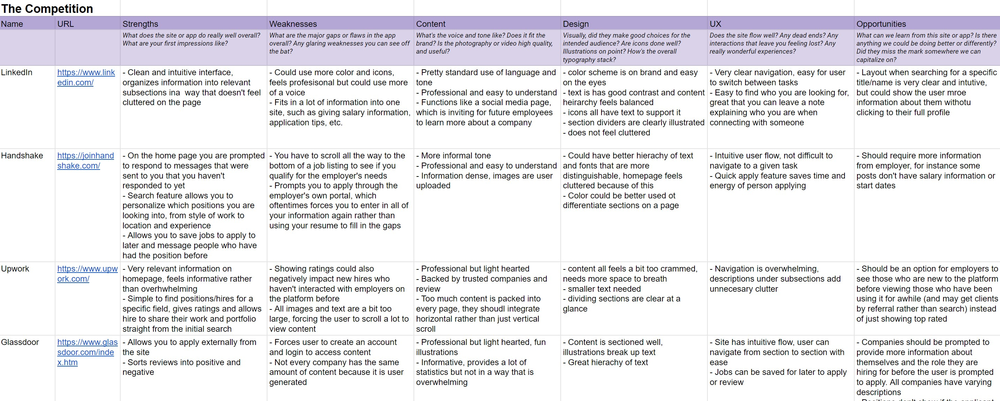
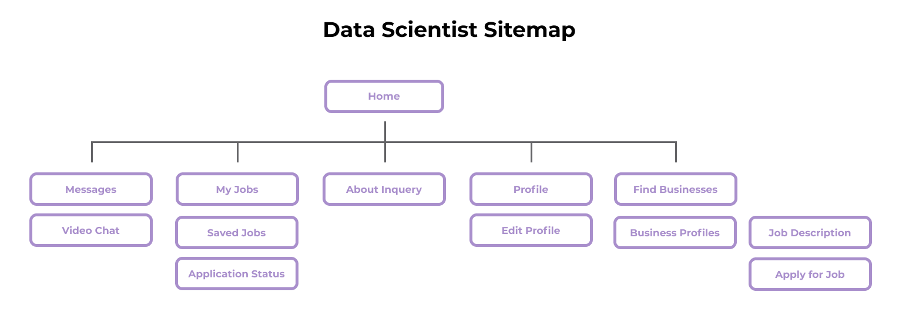
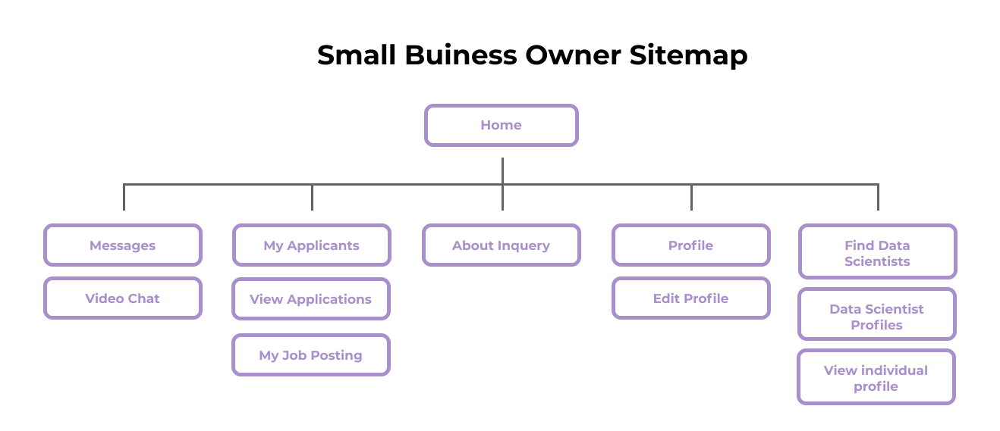
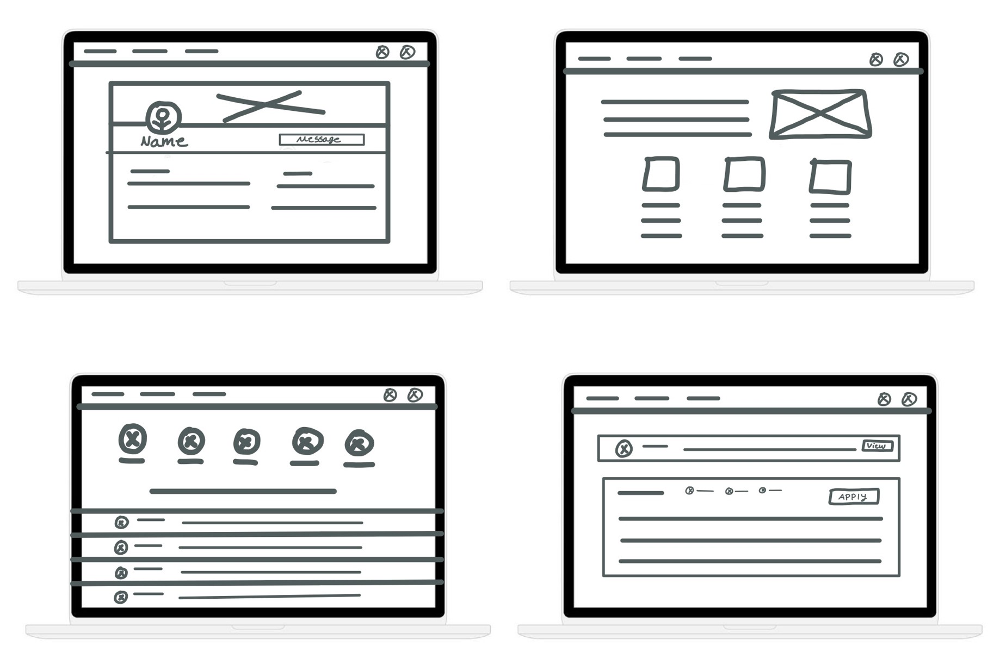
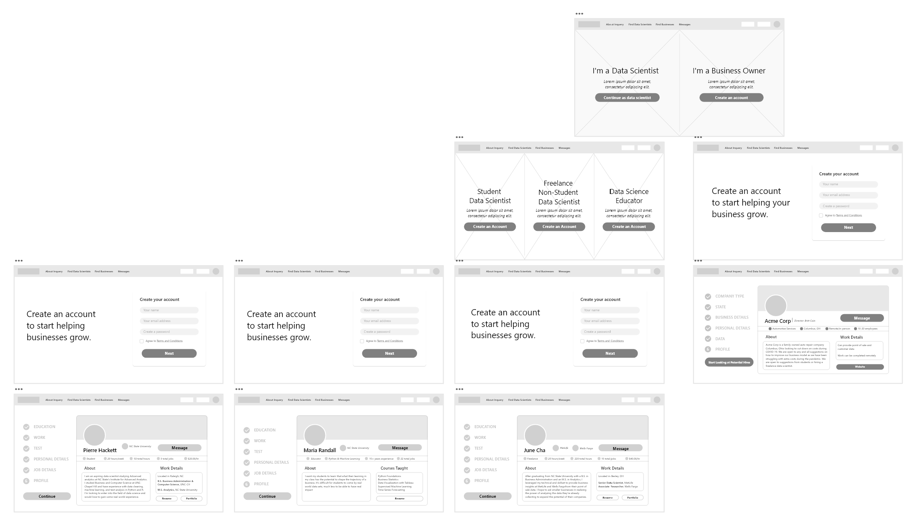
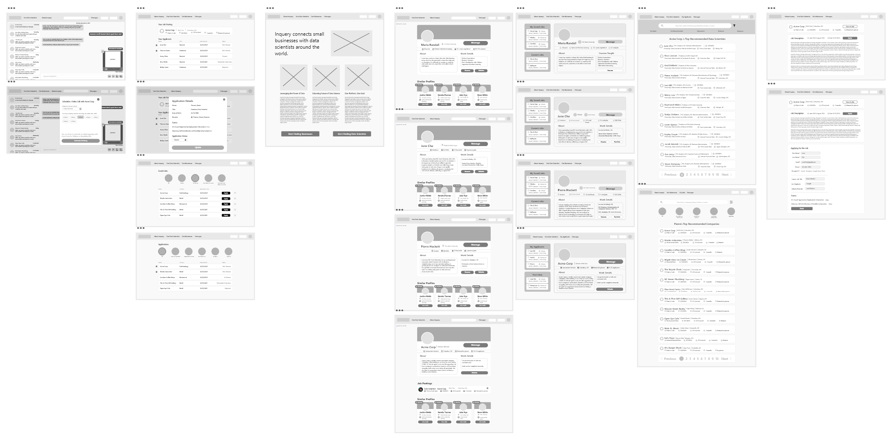
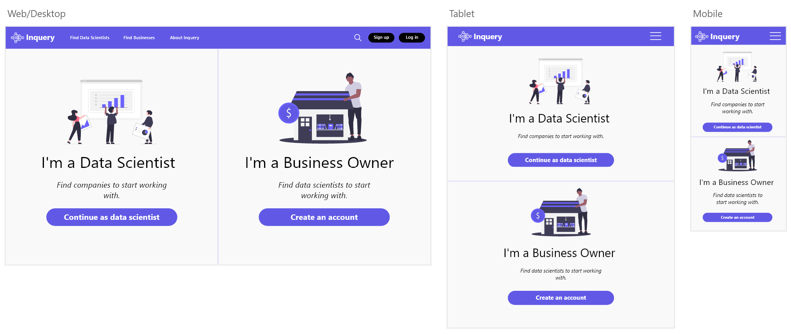
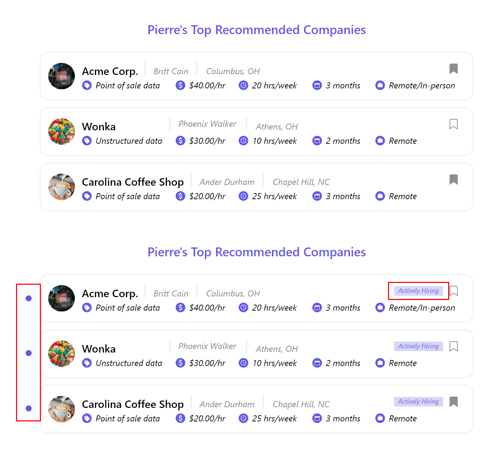
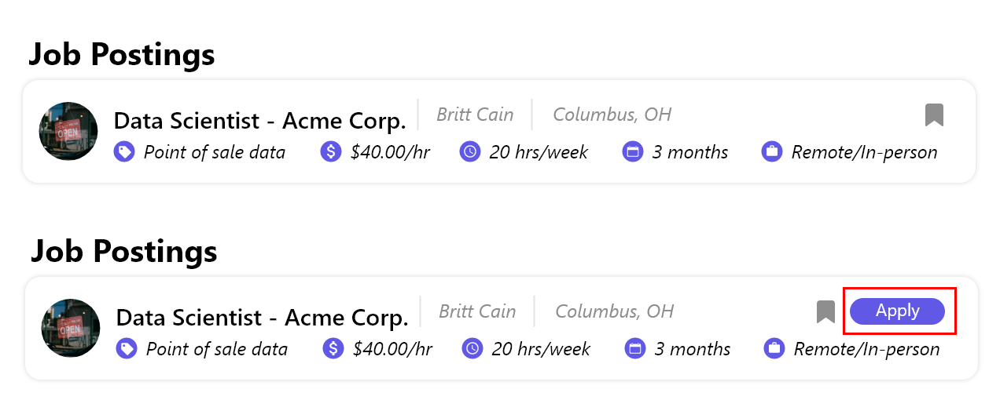

What Inquery Means to Me
The idea for Inquery came from a course at my university that was created for students studying computer science and business where they would get paired into groups and find insights from various datasets. Throughout COVID, one of the students' parents owned their own coffee shop and were willing to provide their data so that the class could provide them with business insights to help them cut costs during such a difficult time. The students were able to provide recommendations for the shop, such as closing during certain hours, removing specific items from their menu, and strategic discounts. With my parents as small business owners, I was motivated to design Inquery as a way I saw for both sides to benefit from each other's help.
Challenge
Many small businesses don’t have the time, resources, or knowledge to become a data driven organization. Data scientists can help these smaller businesses find insights in their data, but they need a way to connect with each other
Solution
Provide small business owners with a personalized job board to connect with data scientists so they can improve their business model and provide relevant experience to both data science students and professionals
User Research: Summary
Our initial idea was to design an app that would budget our users' money, but after speaking with college students, we realized that we weren't seeing many commonalities in how people currently tracked their money or what they wanted out of an app, a budgeting feature included. Our solution was to design a simple spending tracker that would be flexible to user needs and ultimately teach financial and spending awareness.
Data Science Students
Pain Point: Applying for a position but never hearing back from the company
Solution: Include an “under review” flag on their application once the business has viewed the application
Data Science Educators
Pain Point: Finding businesses who are interested in sharing their data and understand the benefits of analysis
Solution: Have a messages and video chat screen to make it easy for educators to get into contact with small businesses
Small Business Owners
Pain Point: Understanding the benefits to thier business of data analysis (our participant hadn't previously heard of data science)
Solution: Include an about page with relevant information and testimonials to inform business owners about the power of their data
Freelance Data Scientists
Pain Point: Being able to agree with business owners what compensation/hours they operate with
Solution: Include a feature that alerts businesses to the compensation and hours that a freelance data scientist are accustomed to
By evaluating our competitors and comparing that analysis to our user interviews, we determined that crucial features of Inquery would be the ability to quickly scan an applicant’s qualifications and job preferences from their profile, providing scannable job details, notifying an applicant if their application has been viewed, and giving status indicators to employers so they can keep track of new applicants.
Information Architecture
Since there are four types of users for our site, we divided our IA into the view for a data scientist (once they have created an account) and the view for a small business owner. The main difference is how either user would interact with the job/applicant search.
After setting up the app, they can view their overall spending on the dashboard, view a list of their transactions, and sort them with the Inbox.
 Sketches
Initial ideations of Inquery included a profile that any business/data scientist could be messaged from, a search bar for a user's top recommended profiles, and an about page where small business owners could learn about the value of hiring a data scientist.
Wireframes
Our wireframes highlighted the primary user flows of 1) locating a job and applying to it and 2) monitoring your applicants and ensuring they are qualified for the job. A prominent feature that ultimately made it to the digital wireframes was a chat screen where employers and applicants can easily message and schedule zoom meetings. This remedied a shared user paint point between the two of a lack of timely and proper communication.
First-Time User
Returning User
Once we transitioned our wireframes into a high-fidelity prototype, we were ready to test it on users!
Responsive Design
We wanted our site to be compatible for all screen sizes, so we created screens for mobile and tablet. Additions like a hamburger menu, a tiered cake layout to be more scalable to scrolling, and cards that the user could click on for additional information were incorporated.
Style Guide
Inquery was built using variations of Segoe UI for our typography and a simple color scheme of white, black, and purple to keep our designs consistent with the 60-30-10 rule. We created reusable components for our navbars and buttons to streamline the design process.
Our unmoderated usability test was sorted into both tasks and reflections for data scientists and small business owners. Our questions asked them to navigate to portions of the site as well as to also give feedback on the design and their experience. Some questions we asked participants were:
Imagine you are a data scientist trying to apply to Acme Corp. How might you navigate to the portion of the site where you can apply to the company?
Were you able to find it? Was this experience difficult or easy?
Do you have any suggestions for improving this part of the website?
Participant #1
“I think it could be helpful to add a feature that shows whether a data scientist is open to work and similarly whether a company is open to hiring.”
Participant #2
“It was easy to find the screen where I can apply for a job, however options include message or go to website. No clear Apply option.”
Participant #3
"As a data scientist, I like that you can save jobs that are interesting. One thing that was a little confusing was that a job description wasn't shown immediately on the business's page."
Redesigned Panels
Our users highlighted multiple areas of improvement, such as streamlining the process of applying to a job and increasing communication between applicants and employers. To accommodate those pain points, we redesigned some of our panels with additional features.
#1 - Indicate if a company is actively looking for hires
#2 - Have a shortcut to apply to a job posting from the businesses’ profile instead of first clicking on the position description to be able to apply
Success Rate
Out of the 4 tasks we asked our users to complete, all 6 users were able to complete all 4 tasks and 100% of users said they would use this site.
Participant #1
“I thought it was easy to find where I can view people that applied to my job posting since it is located on the navigation bar and the title "My applicants" is pretty straightforward.”
Participant #2
"The design is very good! It's very straightforward to use and I love the visuals."
Participant #3
“I didn't necessarily think anything was missing or overwhelming. I especially liked the different categories a company or business owner can look for potential candidates.”